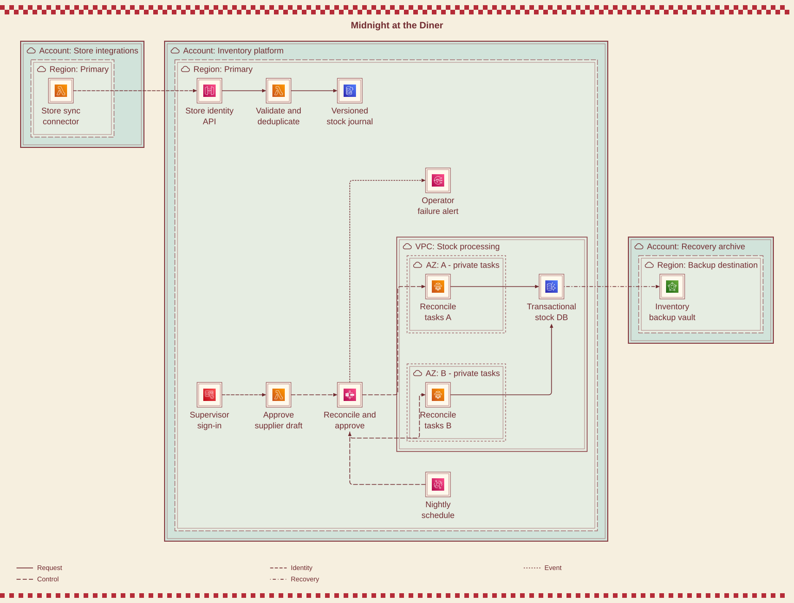

Midnight at the Diner
Mid-century order pad
Store integrations arrive from a separate account. The inventory platform reconciles a versioned journal, can place work in either AZ, and waits for a supervisor before releasing a supplier proposal.
Can stores reconnect and replay stock updates without counting them twice?
Whole diagram fitted. For larger labels, turn off “Fit whole diagram” and pan, or open the full-size SVG.



Mermaid source
Download .mmdSemantic content and gallery-only boundary/flow annotations stay in this file. The drawing treatment is applied after layout.
architecture-beta
%% Fictional multi-location stock workflow. Suppliers receive proposals only after a human approval.
%% @boundary branches account
%% @boundary branchRegion region
%% @boundary production account
%% @boundary primary region
%% @boundary vpc vpc
%% @boundary aza az
%% @boundary azb az
%% @boundary backups account
%% @boundary backupRegion region
group branches(cloud)[Account: Store integrations]
group branchRegion(cloud)[Region: Primary] in branches
group production(cloud)[Account: Inventory platform]
group primary(cloud)[Region: Primary] in production
group vpc(cloud)[VPC: Stock processing] in primary
group aza(cloud)[AZ: A - private tasks] in vpc
group azb(cloud)[AZ: B - private tasks] in vpc
group backups(cloud)[Account: Recovery archive]
group backupRegion(cloud)[Region: Backup destination] in backups
service stores(aws:lambda)[Store sync connector] in branchRegion
service api(aws:api-gateway)[Store identity API] in primary
service ingest(aws:lambda)[Validate and deduplicate] in primary
service journal(aws:dynamodb)[Versioned stock journal] in primary
service schedule(aws:eventbridge)[Nightly schedule] in primary
service flow(aws:step-functions)[Reconcile and approve] in primary
service taskA(aws:fargate)[Reconcile tasks A] in aza
service taskB(aws:fargate)[Reconcile tasks B] in azb
service db(aws:aurora)[Transactional stock DB] in vpc
service supervisor(aws:cognito)[Supervisor sign-in] in primary
service review(aws:lambda)[Approve supplier draft] in primary
service failures(aws:sns)[Operator failure alert] in primary
service vault(aws:backup)[Inventory backup vault] in backupRegion
%% @edge stores api identity | Store workload signs requests with its own IAM role; configured API resource policy limits integration accounts.
stores:R --> L:api
%% @edge api ingest request | Connector includes store ID and monotonic event version; backend checks identity-to-store binding.
api:R --> L:ingest
%% @edge ingest journal request | Conditional event-ID insertion and version checks tolerate offline replay without double counting.
ingest:R --> L:journal
%% @edge schedule flow control | Scheduler starts a bounded execution, not an unbounded retry loop.
schedule:L --> B:flow
%% @edge flow taskA control | Orchestrator starts reconciliation work with explicit retry and timeout policies.
flow:R --> L:taskA
%% @edge flow taskB control | Alternative AZ placement is capacity, not a second execution of the same stock mutation.
flow:B --> L:taskB
%% @edge taskA db request | Transactional stock updates; a VPC endpoint permits journal reads that are omitted from the drawing.
taskA:R --> L:db
%% @edge taskB db request | Shared cluster enforces idempotent reconciliation checkpoints.
taskB:R --> B:db
%% @edge supervisor review identity | Verified supervisor membership authorizes a supplier-proposal approval, not unrestricted inventory writes.
supervisor:R --> L:review
%% @edge review flow control | Authenticated callback releases the approval step; supplier execution remains outside this view.
review:R --> L:flow
%% @edge flow failures event | Catch path notifies an operator with execution ID and failed checkpoint.
flow:T --> L:failures
%% @edge db vault recovery | Scheduled cross-account backup copy requires supported resources, backup roles and encryption permissions.
db:R --> L:vault
Reproduce this collection from the Beautiflow repository:
bun scripts/build-boring-diagrams.tsMeasured evidence
Full evidence JSON- Native geometry
- 0 findings across 8 measured checks
- Styled render integrity
- 0 element, plain-label, ID or reference findings
- Authored annotations
- 9 boundaries · 12 relationship meanings
- AWS configuration
- Not validated
These checks do not establish visual quality, every decorative mark, browser glyph ink, edge-label boxes or deployed AWS correctness. Architecture has guarded transforms, not automatic polish.
Source SHA-256
f34b572d66f750bbadeae56e9336a2bfe7ba6a0efd9cd0249a91d0a806223755Read all 12 relationships
Line patterns distinguish requests, credentials, events, replication, configuration/control and recovery. Hover a styled connector for its meaning. Native layout preserves routes but does not include these gallery annotations.
| From | To | Kind | Meaning |
|---|---|---|---|
| Store sync connector | Store identity API | identity | Store workload signs requests with its own IAM role; configured API resource policy limits integration accounts. |
| Store identity API | Validate and deduplicate | request | Connector includes store ID and monotonic event version; backend checks identity-to-store binding. |
| Validate and deduplicate | Versioned stock journal | request | Conditional event-ID insertion and version checks tolerate offline replay without double counting. |
| Nightly schedule | Reconcile and approve | control | Scheduler starts a bounded execution, not an unbounded retry loop. |
| Reconcile and approve | Reconcile tasks A | control | Orchestrator starts reconciliation work with explicit retry and timeout policies. |
| Reconcile and approve | Reconcile tasks B | control | Alternative AZ placement is capacity, not a second execution of the same stock mutation. |
| Reconcile tasks A | Transactional stock DB | request | Transactional stock updates; a VPC endpoint permits journal reads that are omitted from the drawing. |
| Reconcile tasks B | Transactional stock DB | request | Shared cluster enforces idempotent reconciliation checkpoints. |
| Supervisor sign-in | Approve supplier draft | identity | Verified supervisor membership authorizes a supplier-proposal approval, not unrestricted inventory writes. |
| Approve supplier draft | Reconcile and approve | control | Authenticated callback releases the approval step; supplier execution remains outside this view. |
| Reconcile and approve | Operator failure alert | event | Catch path notifies an operator with execution ID and failed checkpoint. |
| Transactional stock DB | Inventory backup vault | recovery | Scheduled cross-account backup copy requires supported resources, backup roles and encryption permissions. |
Architecture assumptions & omissions
- Store connectors sign API requests. Identity-to-store bindings, event IDs and monotonic source versions must be checked server-side; a store ID in JSON is not authority.
- Fargate placements in AZ A/B are alternative execution capacity, not permission to execute each stock mutation twice. Reconciliation uses transactional checkpoints and bounded retries. Journal-read paths and VPC endpoints are omitted.
- The supervisor callback releases a workflow approval step. Supplier ordering and payment are outside the view. Catch paths carry execution/checkpoint identifiers for recovery.
- The Aurora icon is an aggregate cluster, not a single-instance HA claim. Cross-account backup needs supported resources, organization configuration, copy roles, KMS permissions, retention and tested restoration.